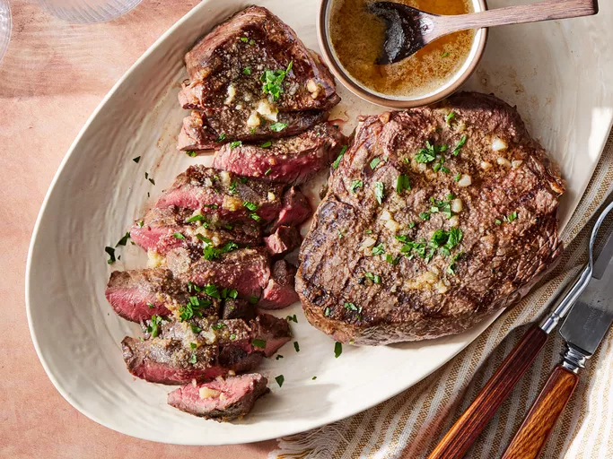

Sirloin Steak with Garlic Butter
Home

This sirloin steak recipe is served with very garlicky butter that makes this steak melt-in-your-mouth wonderful! I have never tasted any other steak that came even close to this recipe!
Why you'll love this recipe
- With just a few simple steps, enjoy juicy and tender grilled top sirloin steaks.
- Home cooks love how garlicky butter creates steakhouse-quality flavor.
- Allrecipes member sandyandcosmo raves, "...these steaks were awesome!"
Ingredients
- ½ cup butter
- 4 cloves garlic, minced
- 2 teaspoons garlic powder
- 4 pounds beef top sirloin steaks
- salt and pepper to taste
Directions
- Gather all ingredients. Preheat an outdoor grill for high heat and lightly oil the grate.
- Melt butter in a small saucepan over medium-low heat.
- Stir in minced garlic and garlic powder. Set aside.
- Season both sides of each steak with salt and pepper.
- Place steaks on preheated grill and cook 4 to 5 minutes per side. An instant-read thermometer inserted into the center should read 140 degrees F (60 degrees C) for medium doneness.
- Transfer steaks to warmed plates; brush the tops liberally with garlic butter and allow to rest for 2 to 3 minutes before serving.